The Games
Orlandu's Arcade lives in two rooms: the garage arcade — four uprights, the pinball row, and the broadcast monitor racks — and the game room inside the house, where the candy cab and the cocktail hold court.
The garage arcade — uprights

Big Blue
The classic American showcase cabinet — rebuilt power supply, and now wearing fresh Capcom-logo side art. It runs a Darksoft CPS-2 multi in a Jasen's Customs case, so the whole CPS-2 library is on tap — Marvel vs. Capcom most of the time. The full profile →

VS. UniSystem — Dedicated
Nintendo's arcade answer to the NES era. A VS. Interchanger runs both VS. Super Mario Bros. and VS. Duck Hunt — and the Mario is not the game you think it is. Did you know? → The full profile →

Donkey Kong
Blue plywood — the machine that started Nintendo's arcade legend, and most collections worth the name. The full profile →

Mario Bros. — Widebody
Two players, one sewer. The widebody Mario Bros. rounds out the Nintendo upright lineup. The full profile →
The garage arcade — pinball row

Indiana Jones: The Pinball Adventure
The widebody DCS-era classic — three films on one playfield, and Williams’ first year of digital sound. The full profile →

Total Nuclear Annihilation
Scott Danesi's synthwave fever dream. Fast, brutal, single-level, perfect. The full profile →

Ghostbusters Premium
Who you gonna call when the magna-slings throw the ball somewhere unfair? Nobody. That's the game. The full profile →

Rick and Morty — Blood Sucker Edition
The limited Blood Sucker Edition — bought new in box, home use only, running in its original butter cabinet. The full profile →

The game room inside the house
One full turn
A slow spin from the middle of the room — the quickest way to see how it all fits together before the machines get their own entries below.
- The framed PCB wall, boards hung like paintings
- Super Mario Bros. on the PVMs, console shelf underneath
- The fiber-optic Kay·Bee World of Nintendo sign — Sho'nuff approving from the wall
- The Superbrite glowing over the game library
- The Mini Cute and the Red Tent holding their corners

Mini Cute — Pink
The only candy-style cabinet in the collection, and it's the one that matters: Capcom's compact Mini Cute in the pink variant.

VS. DualSystem — Red Tent Cocktail
The rarer sit-down side of the VS. family — the distinctive red-canopy cocktail DualSystem.
The game room also hosts the big PVMs — the 29-inch PVM-2950Q and the PVM-20L5. Meet the fleet →

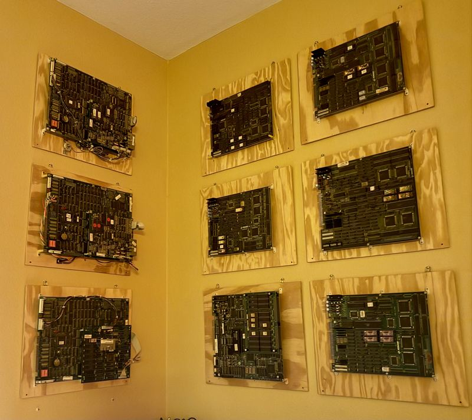
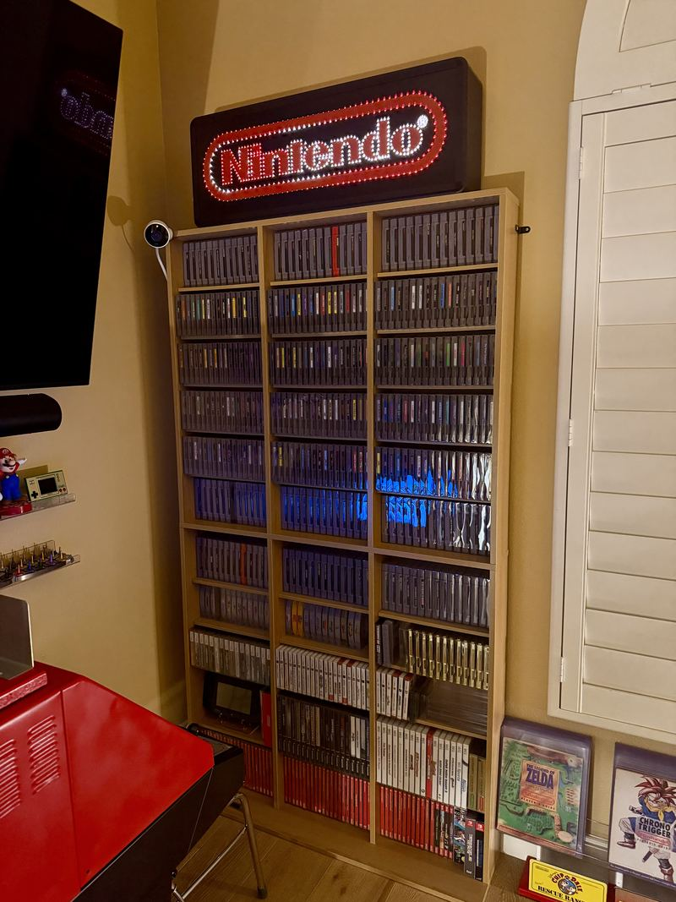
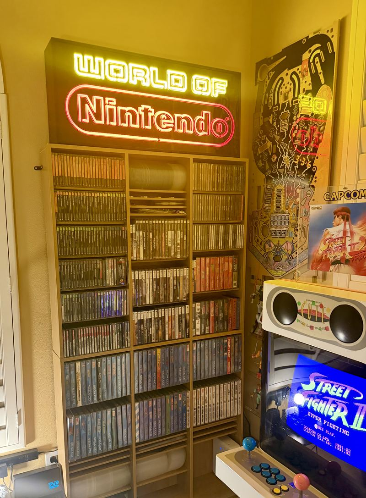
Nintendo retail signage
KB Toys co-branded display
Store-glow nostalgia: the fiber optic Nintendo sign that once pulled kids across a mall.
World of Nintendo Superbrite
The iconic red-and-white World of Nintendo marquee, Superbrite fluorescent version.
NES Racetrack sign
The NES racetrack display, out of the box and on display in the game room — you can spot it in the Store glow shot below.


The PlayChoice-10 topper wall thirteen originals
A PlayChoice-10 held ten games at once, so the cabinet needed a way to say what was in it. Nintendo's answer was the topper: a printed plastic panel that clipped to the crown of the cabinet and announced the game — usually with the word NEW somewhere on it, because the whole point was to tell a room full of quarters that something had changed. Operators swapped them as the game cards rotated, which is exactly why so few survived: they were consumables, printed to be replaced.
These thirteen are originals, and they run in roughly the order their copyright lines do — Metroid's reads 1987, the Turtles' 1990. They live on the Red Tent, which carries an official PlayChoice-10 conversion kit on one side. Five more are still on the hunt list.
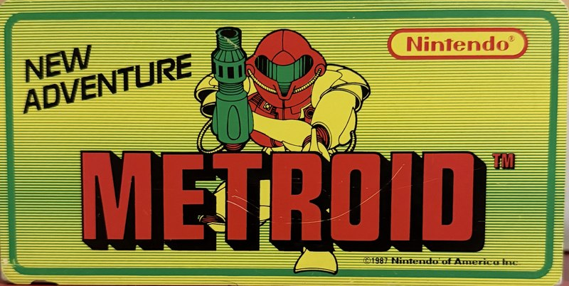
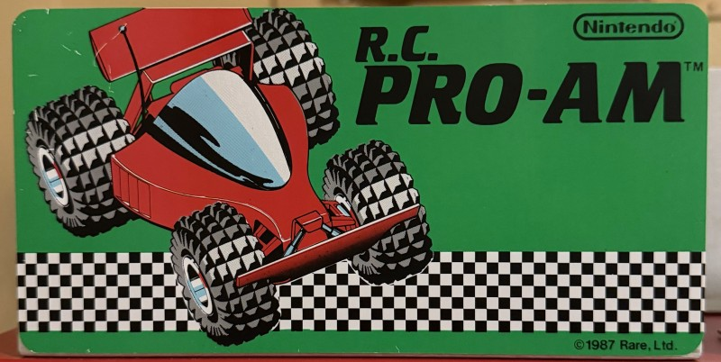
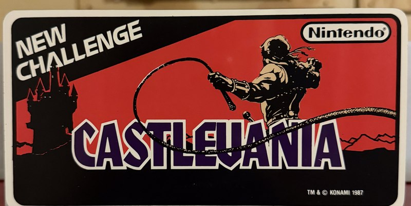
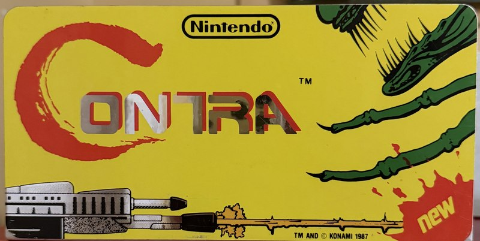
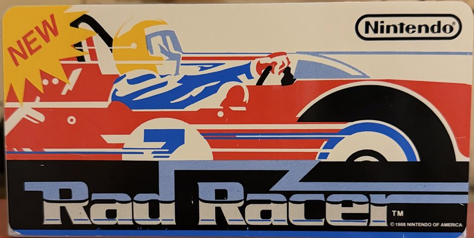
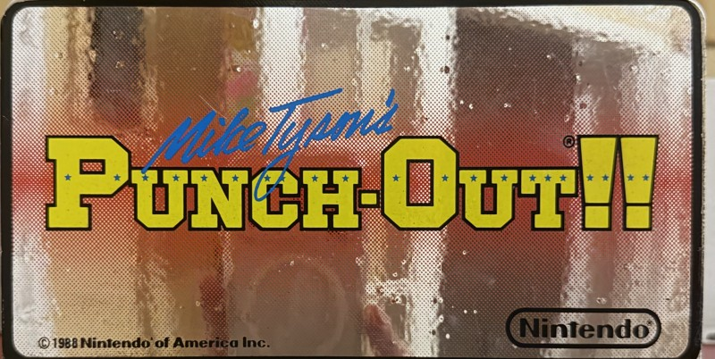
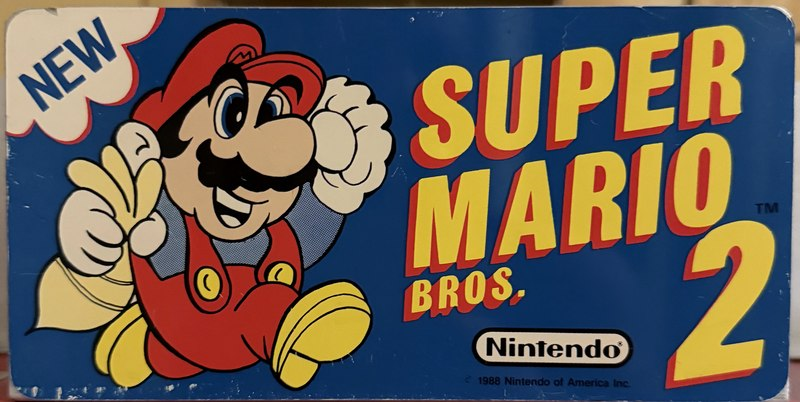
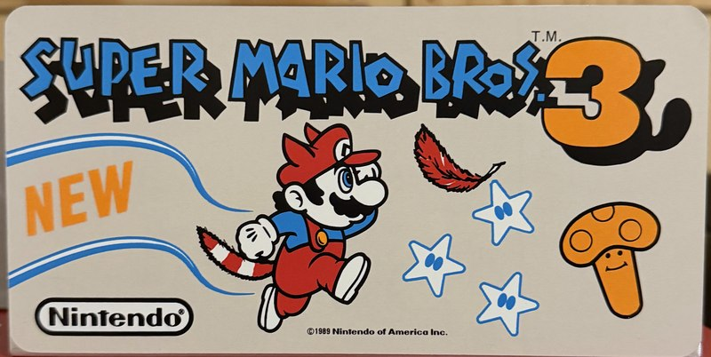
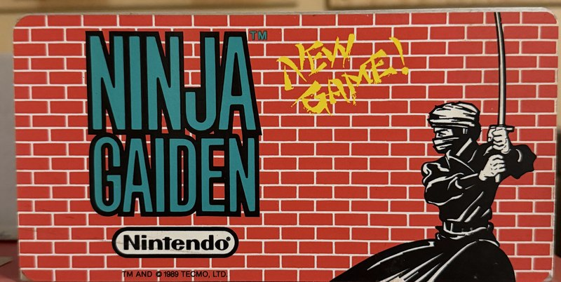
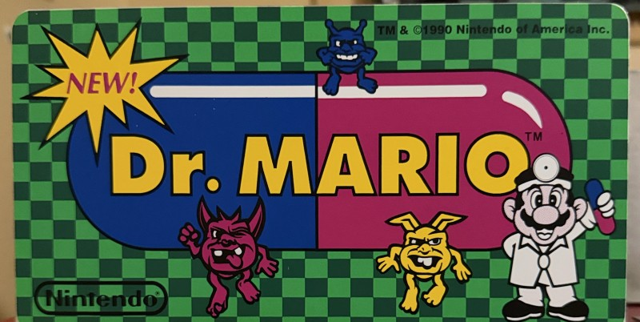
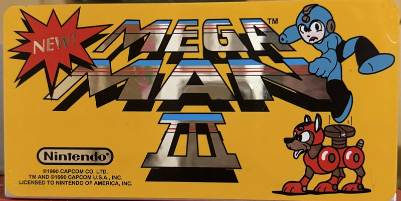
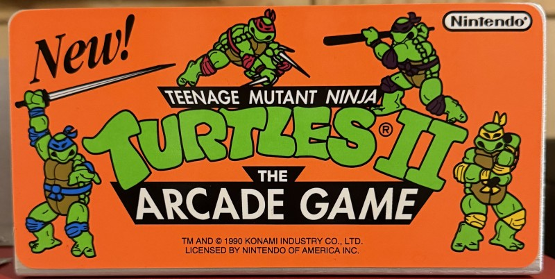
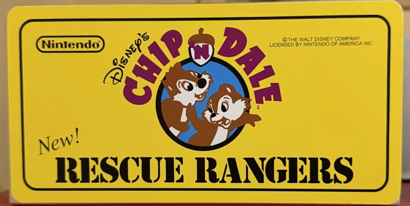
Shot one at a time on the same shelf, straightened and cropped to the same frame so the artwork can be compared side by side rather than admired one at a time.
In memoriam machines that passed through on their way to someone else's story


Console library
Beyond the cabinets there's a cataloged collection of consoles and games — nearly 900 items logged, from a JVC X'Eye (currently out for servicing) to a modded PS2 running its library from a memory card. The hardware now has its own page.